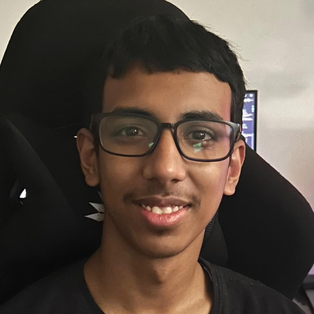
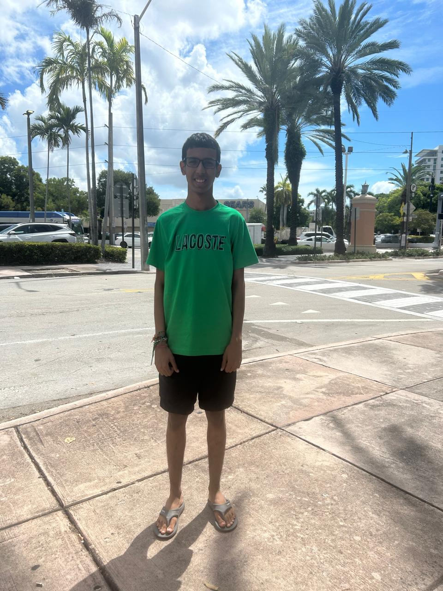
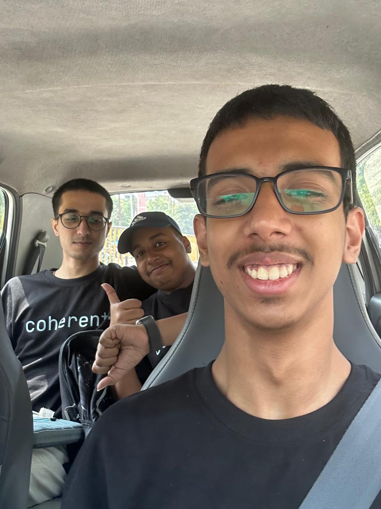
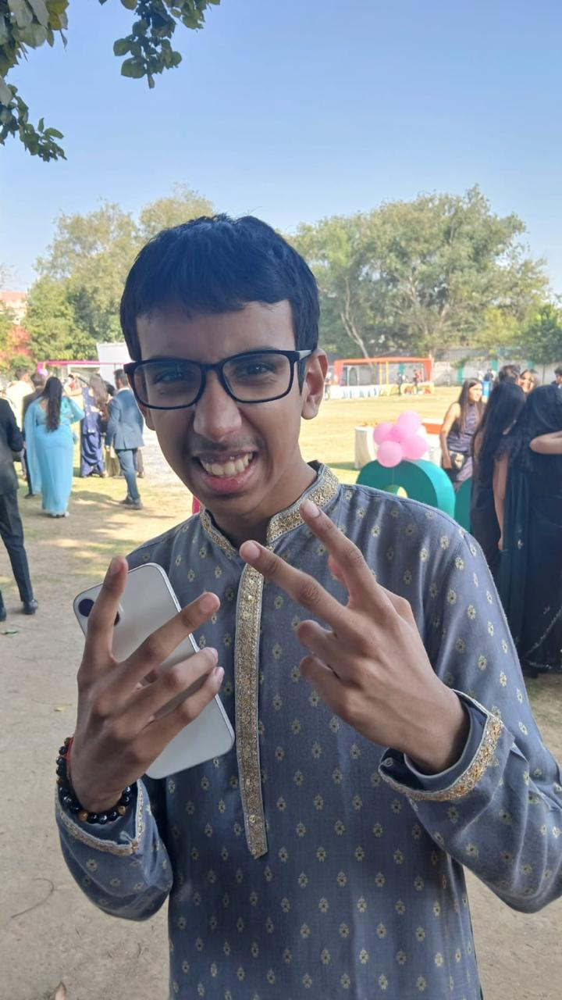
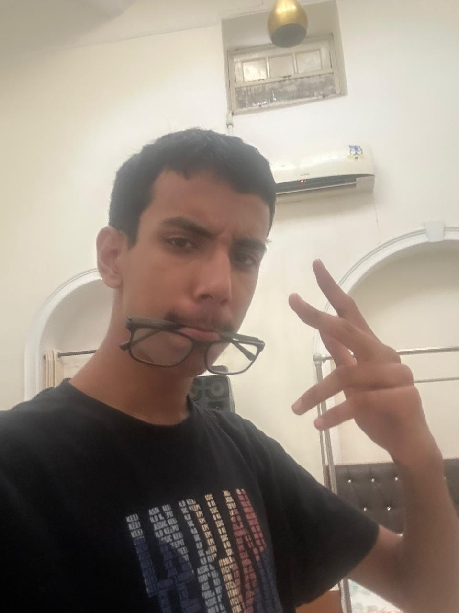
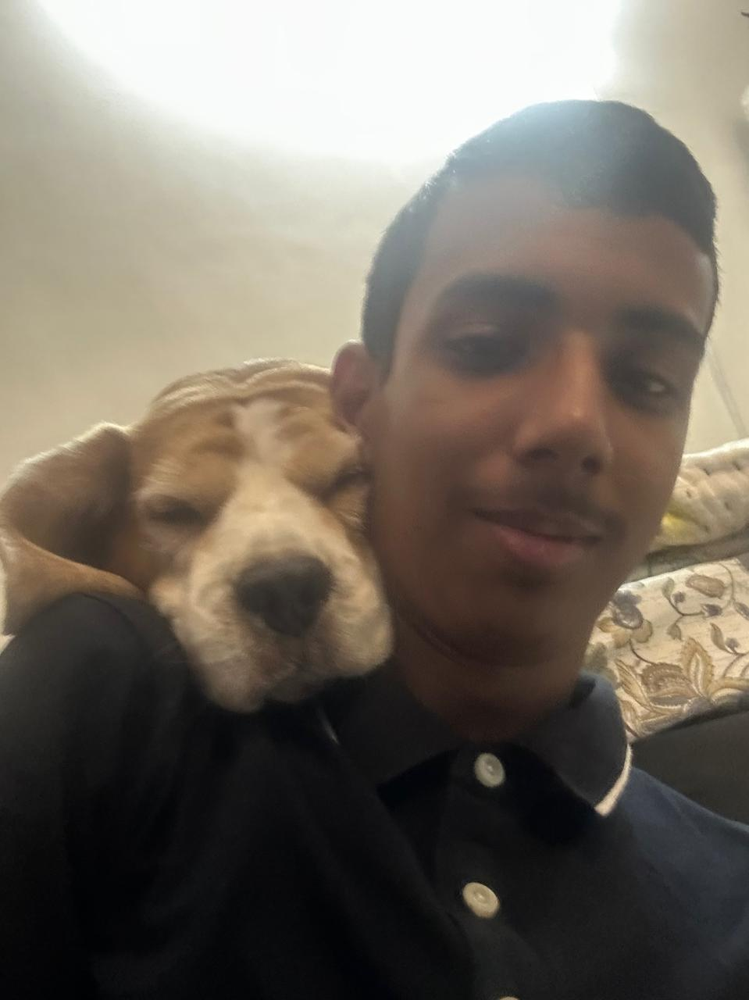
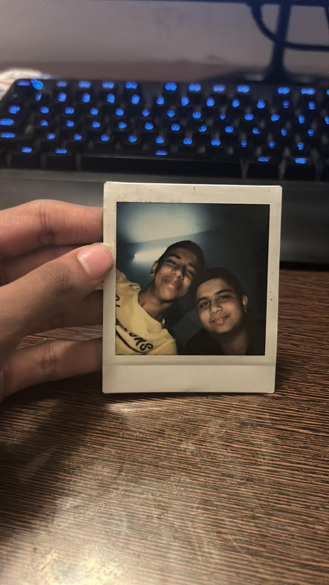
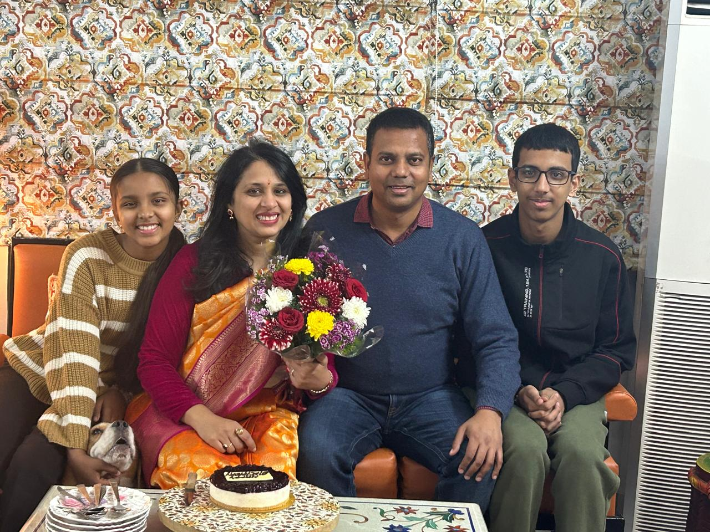

Aarav Dayal

About Me
- CEO and Founder of Lumatozer where we work on building world's most efficient, secure and scalable blockchain infrastructure.
- I am a System Architect. I build and design large-scale efficient architecture and infrastructure.
- I am also a Full Stack Developer, self-proclaimed Network Engineer and Cyber Security Researcher.
- Currently working on LTZ-Chain - one of the world's fastest and most efficient blockchain to date (250,000 Transactions per second / 1.4 megabyte per second bandwidth).
- Currently working on VenGO - a combination of a custom language and a cross-language smart contract engine for LTZ-Chain.
- Worked with OneQid as a System Design Architect where I built a solution for storing and verifying identities such that once after verification of identities by Qid, users can share and prove the validity of one's personal details without the identities stored by Qid or any other centralized authority. This was enabled using LTZ-Chain.
- Worked at Ladli NGO (not for showing off to college) where I helped build Voltour, a social volunteering platform.
- Firm believer in God and the butterfly effect.
- I am an IronFallibilist - a person who holds a very strong belief set and follows it very strictly while constantly working towards breaking their beliefs to make their belief set even stronger.
- Studying at UW Madison Computer Science
Achievements
- Regional Winner at Tetr Disrupt 2025 ($1000)
- Neo X Blockchain Hackathon 2024 Second Runner Up ($2000)
- Winner at EthIndia 2023 for best use of Cross Chain Messaging ($1000)
- National Winner of Enigma Slash Cryptic Hunt organized by IIIT Delhi
- Second Runner Up at Nasa Space Apps 2023 NCR Region
- Winner at CodeDay Delhi 2023
Socials
Gallery
(Doing this to make google show more images of mine upon searching my name)






